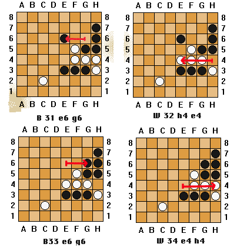

<HTML>
<HEAD>
<TITLE>Repetition in LOA</TITLE>
<script language=javascript>
</HEAD>
<body background="/images/background-image.jpg">
<H1>Repetition in LOA</H1>
<p>
Since I saw the theoretical possibility that repetition could occur, I 
asked several active players, and posted a question to rec.games.board. 
Most of the reponses were negative &quot;never seen it&quot;, but a 
posting from Phillip Cohen was more interesting.  That post is the basis for 
this page.
<p>
Phillip Cohen Wrote:<br>
...Curiously, a couple of days after this note appeared, the latest 
issue of *NOST-Algia* arrived, and John McCallion's column 
contained an annotated <A HREF="loa.html#scrambled-eggs">Scrambled Eggs</A> LOA game with 
the first 
possible forced repetition I ever recall seeing.  The game (Walt Roessner v. Paul Yearout)
<table>
<td>
</td>
<td>
<pre>
B 1 b1 b3		W 2 a2 c2 
B 3 a5 c5		W 4 e1 e3 
B 5 a7 e3+		W 6 g1 g3 
B 7 a3 f3		W 8 f8 f5 
B 9 c8 f5+		W 10 c2 f5+ 
B 11 d1 g4		W 12 a6 c4 
B 13 b3 g3+		W 14 c4 g4+>
B 15 c5 f5+		W 16 h7 f5+ 
B 17 f1 f4		W 18 b8 f4+ 
B 19 e8 e6		W 20 a4 e4 
B 21 e6 g6		W 22 d8 f6 
B 23 h4 f6+		W 24 h3 g2 
B 25 h2 h5+		W 26 c1 c2 
B 27 g8 h7 &#59;Check!	W 28 g2 h3 
B 29 f6 g5 &#59;Check!	W 30 e4 h4 &#59;Check!
</pre>
</td>
</table>
<p>
<table>
<td>
 
</td>
<td>
<p>
The interesting thing about the diagram is the 
possibility of continuing with 
<p>	B 31 g6 e6. 
<p>White can respond
<p> W 32 h4 e4&#59;check!
<p>Suppose Black moves back with
<p> B 33 e6 g6&#59;Check!
<p>White will not stand for that, and so plays 
<p>	W 34 e4 h4&#59;Check, 
<p>and we're back where we started.
<p>
</td>
</table>
<p>
 JM wrote, 'There is at present no official rule to cover this 
situation.  Rather than have the game end in a draw, Robin and I 
would prefer to borrow a rule from Chinese Chess:  the player 
about to repeat a position for the third time must vary the move 
or lose.

<p>In fact, the game continued this way, so repetition didn't play a part 
in the outcome&#59; but clearly, it could have, and therefore can be 
a factor in real games.
<p>
<table>
<td>
</td>
<td>
<pre>
B 31 e3 e4		W 32 c2 b3 &#59;Check! 
B 33 g3 c3		W 34 h3 e6 &#59;Check! 
B 35 f3 d5		W 36 e6 e4+ &#59;Check! 
B 37 g6 e6		W 38 h4 d4 &#59;Check! 
B 39 h7 h4		W 40 b3 b4 &#59;Check! (2 ways) 
B 41 e6 e4+		W 42 b4 c5 &#59;Check! (2 ways)
</pre>
</td>
</table>

</BODY>
<P>
<hr style="width: 100%; height: 2px;">
<table style="width: 100%;">
  <tbody>
    <tr>
      <td align="left"> <font size="-1">
E-mail: <script language="javascript">
document.write("<a href='mailto:gamemaste");
document.write("r\@board");
document.write("space.net'>gamemaste<n>r@board<n>space.net</a>");
</script>
 </font>
      </td>
      <td align="right">Go to <a href="/">BoardSpace.net home page</a>
      </td>
    </tr>
  </tbody>
</table>

</HTML>
